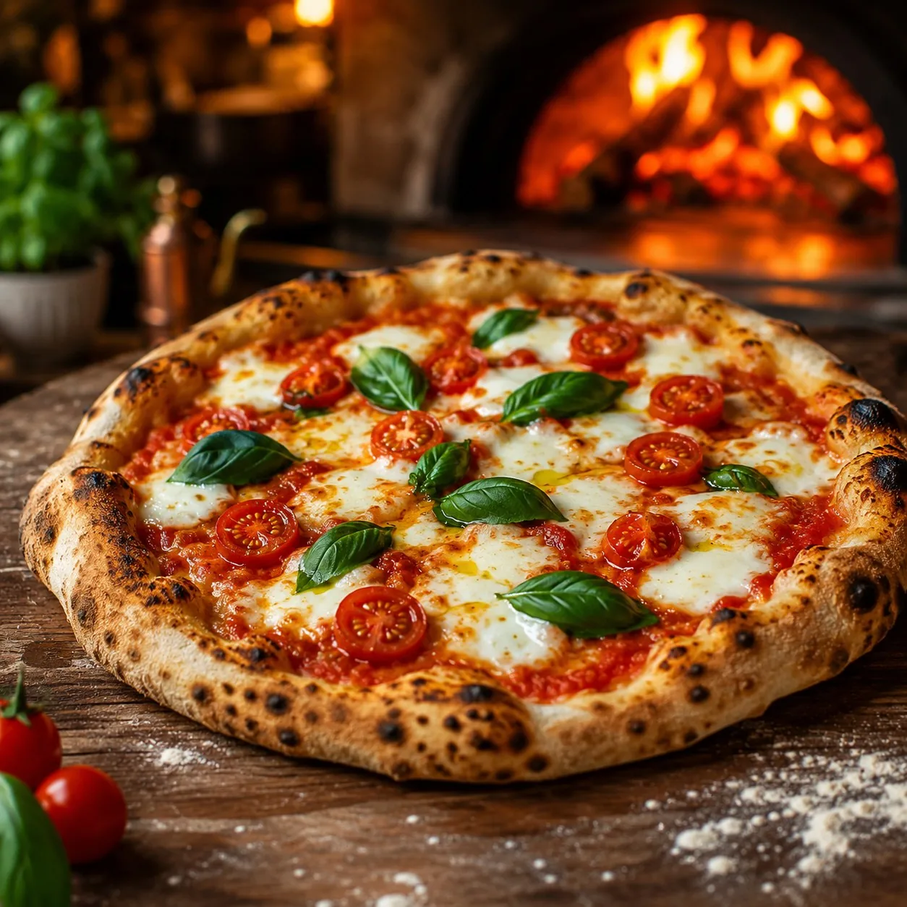
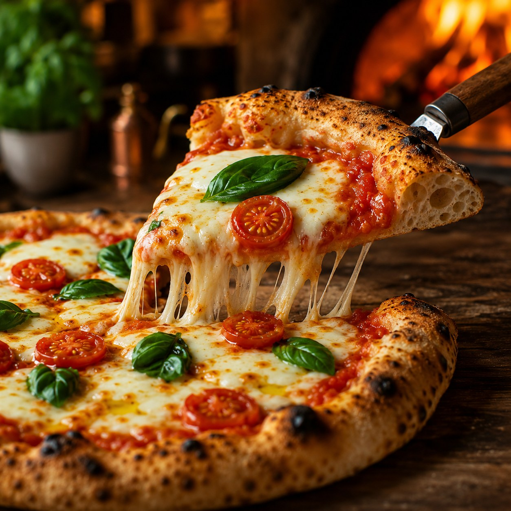
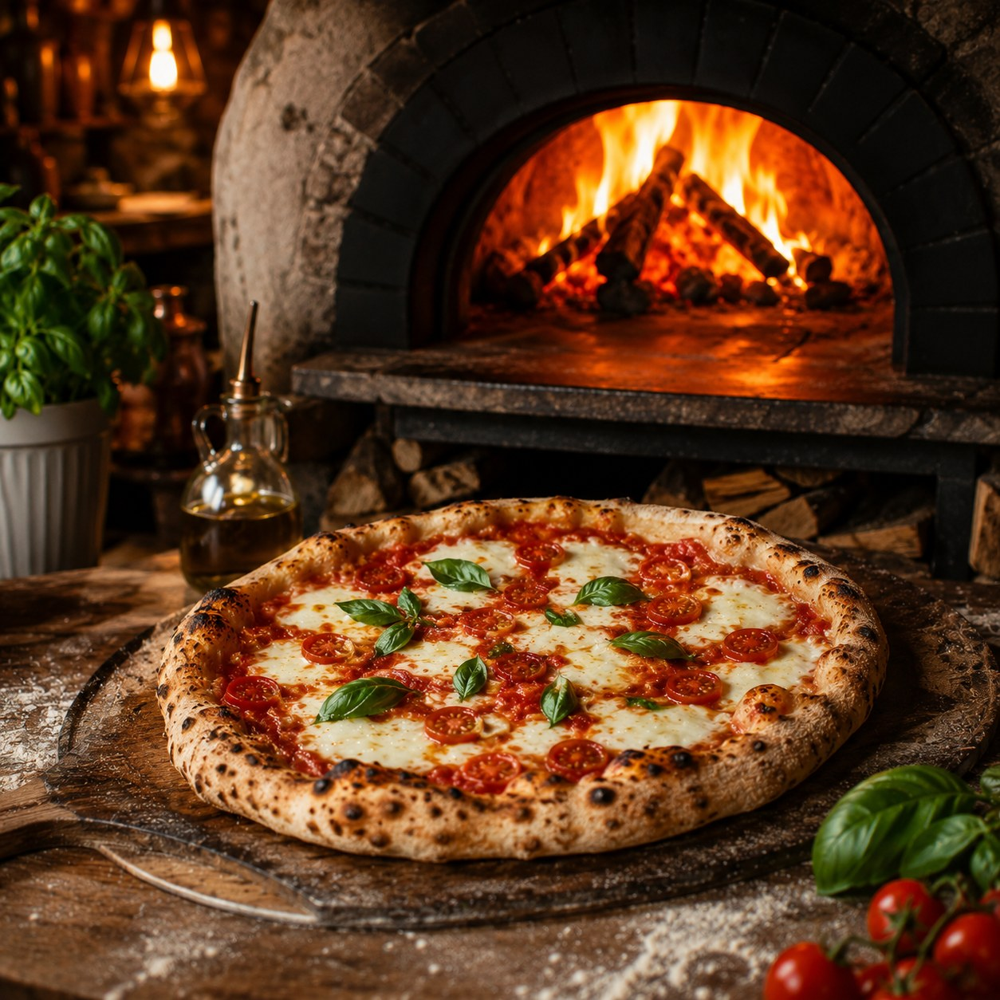
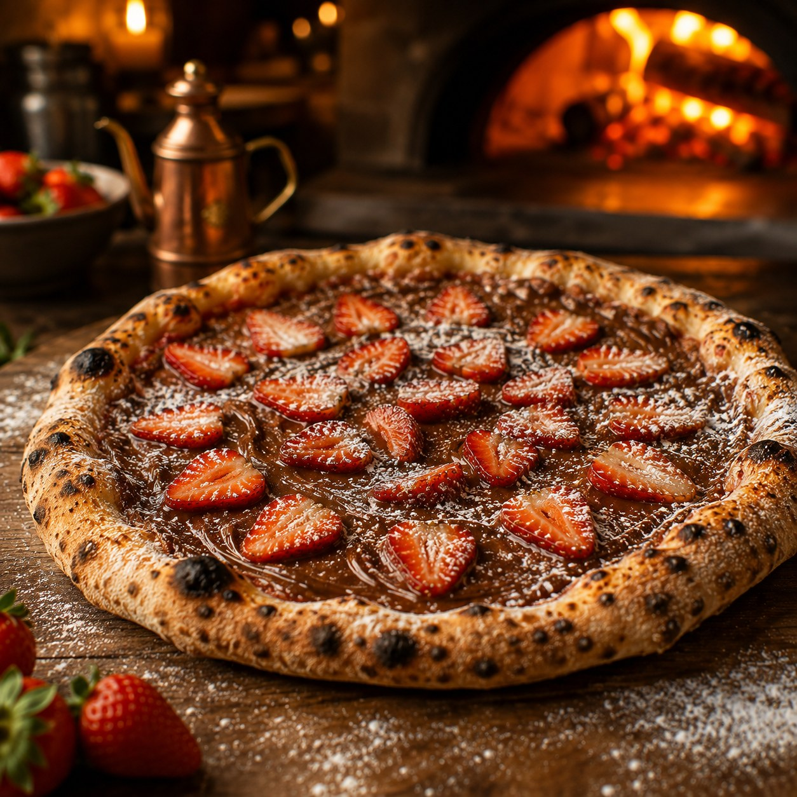
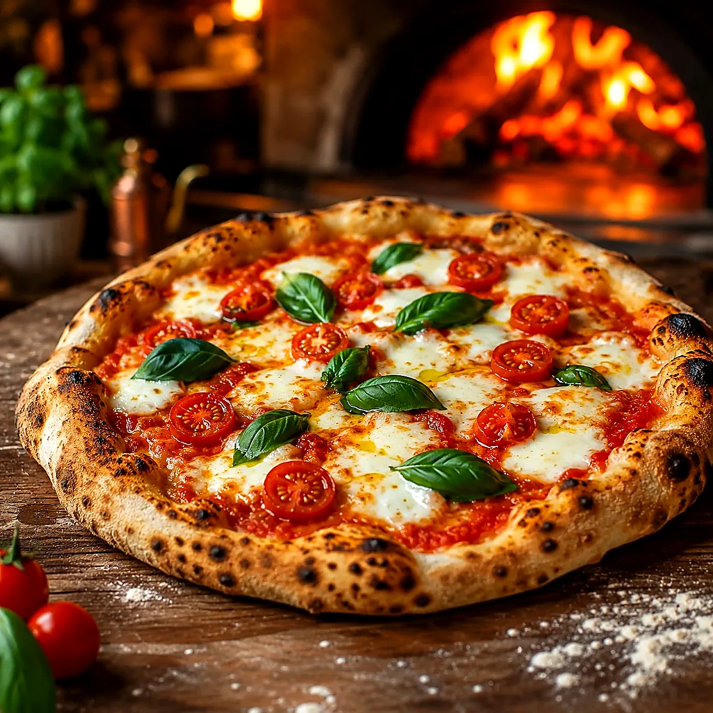

Artigo
Como o forno a lenha muda o sabor da pizza
Temperatura, tempo e contato com o fogo ajudam a explicar por que uma pizza assada em forno intenso tem aroma, textura e borda tão marcantes.
Ler artigoSua noite, do seu jeito
Vá direto ao pedido, peça ajuda para escolher ou conheça primeiro a história e o forno da casa.
Pizzaria artesanal • forno a lenha • Laranjeiras, Serra — ES
Escolha seu sabor, adicione à Sacola e deixe o pedido pronto para confirmar no WhatsApp em poucos passos.
Nada é enviado automaticamente. Você revisa a Sacola, o endereço e a mensagem antes de abrir o WhatsApp.

Pedido rápido
Da farinha ao fogo
Da escolha da farinha ao calor do forno, cada etapa existe para entregar uma pizza mais leve, aromática e memorável.
A base de uma massa elegante começa na textura certa e na escolha cuidadosa dos ingredientes secos.
Fermentação natural para trazer personalidade, aroma e uma digestão mais leve.
Tempo suficiente para a massa ganhar estrutura, leveza e sabor sem atalhos.
Tomates preparados artesanalmente para um equilíbrio limpo entre doçura, acidez e frescor.
O forno entrega calor intenso, bordas alveoladas e um perfume defumado impossível de simular.
É o momento em que tudo se encontra: crocância, cremosidade e aquele ponto que pede outra fatia.
Imagens que abrem o apetite
Uma pequena curadoria visual da experiência Forno Dona Rosa: fogo, textura, bordas alveoladas e sobremesas que fazem a noite terminar ainda melhor.



Conheça a Rosa
Rosa conhece o cardápio da casa, explica o meio a meio, recomenda sabores, consulta o estado da sua sacola e informa horário, endereço e contato — tudo localmente no seu navegador.
Assistente local especializada na pizzaria. Informações comerciais finais devem ser confirmadas pelo WhatsApp.
Uma noite completa
Combine sabores sem transformar o pedido em um catálogo infinito. A Rosa pode sugerir uma composição e você decide o que realmente entra na sacola.
Dona Rosa + Margherita Clássica + Coca-Cola 2 L + Nutella com Morango.
Combinação demonstrativa. Valores e disponibilidade são confirmados no atendimento.Pizza assinatura
Presunto cru, muçarela de búfala, tomate confit, rúcula e parmesão sobre uma massa que descansou por 48 horas antes de encontrar o fogo.
Encontre seu sabor
Um recomendador honesto e direto: você escolhe o perfil que deseja, e o site aponta o sabor mais compatível dentro do cardápio da casa.
Pedido artesanal
Use este formulário somente se quiser escolher tamanho, borda, meio a meio ou observações antes de colocar a pizza na Sacola.
Guarde seus preferidos
Nenhum item favoritado ainda.
Laranjeiras, Serra — ES
Parque Residencial Laranjeiras
Serra — ES • CEP 29165-130
Sábados e domingos: 16h às 0h
Laranjeiras • Serra — ES
Segunda a sexta, das 18h à 0h. Sábados e domingos, das 16h à 0h.
A sua noite de pizza começa aqui.
Peça direto pelo WhatsApp ou venha saborear conosco em Laranjeiras uma pizza artesanal feita com tempo, fogo e ingredientes de verdade.
Favoritas da casa
Curadoria da casa, com disponibilidade conferida pelo catálogo atual.
Do forno para a leitura
Conteúdo editorial da Dona Rosa para descobrir o que existe por trás da massa, do forno e das escolhas à mesa.
Artigo
Temperatura, tempo e contato com o fogo ajudam a explicar por que uma pizza assada em forno intenso tem aroma, textura e borda tão marcantes.
Ler artigo
Artigo
A Margherita se tornou um dos símbolos mais conhecidos da pizza italiana e mostra como poucos ingredientes podem exigir muita precisão.
Ler artigo
Artigo
Artesanal não deveria ser apenas uma palavra de marketing: processo, consistência, ingredientes e identidade precisam sustentar essa percepção.
Ler artigoQuem já pediu
Esta seção só aparece quando o arquivo de avaliações contém depoimentos verificados pela operação.
Pedido sem dúvida
Escolha entrega ou retirada, pague por Pix ou dinheiro e, se quiser, agende. Taxa, prazo e disponibilidade final são confirmados pela pizzaria.
Entregamos em Serra — ES. Para retirada, o checkout remove os campos de endereço automaticamente.
Você escolhe no checkout. Em dinheiro, pode informar para quanto precisa de troco.
Peça o mais rápido possível ou escolha um horário dentro do funcionamento da pizzaria.
Consulte o status atualizado acima.
Em Serra — ES. O CEP é validado antes da revisão.
Sim. Escolha “Retirada na pizzaria” no checkout.
Pix e dinheiro em espécie.
Não. O site abre o WhatsApp com a mensagem pronta; você revisa e envia manualmente.
Nome e endereço ficam somente nesta sessão por padrão. O endereço só é salvo neste dispositivo se você marcar explicitamente a opção de lembrar. Não há envio automático para servidor próprio; os dados entram na mensagem apenas quando você decide abrir o WhatsApp.
Disponibilidade, taxa, prazo e valor final são confirmados pela pizzaria no WhatsApp. Produtos marcados como indisponíveis não podem ser adicionados à Sacola.